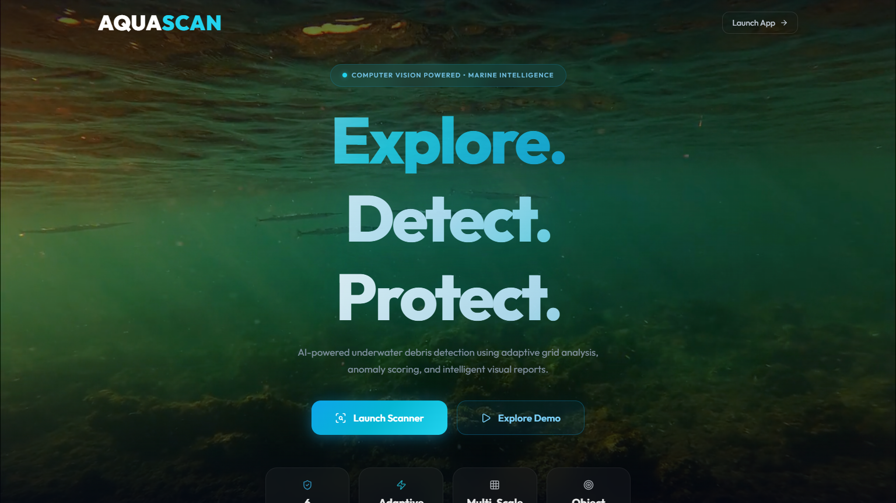
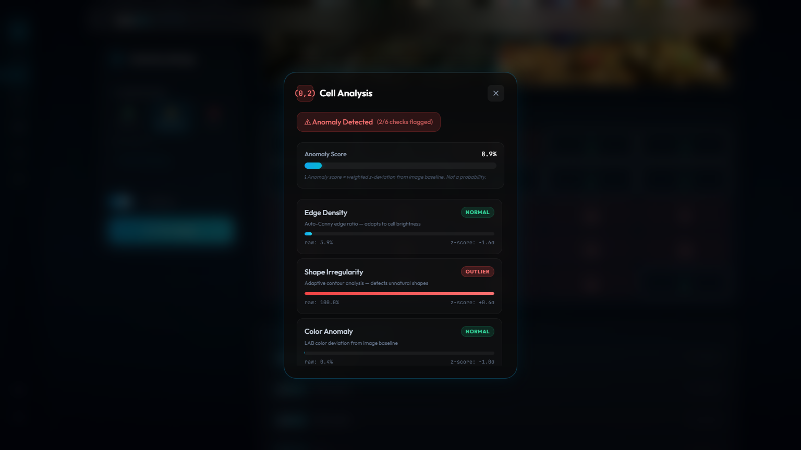
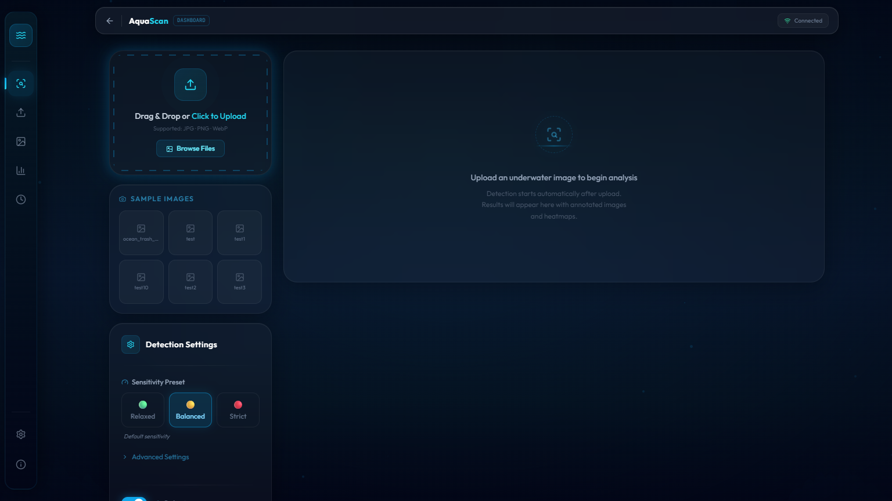
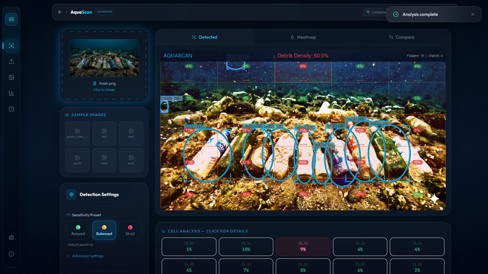
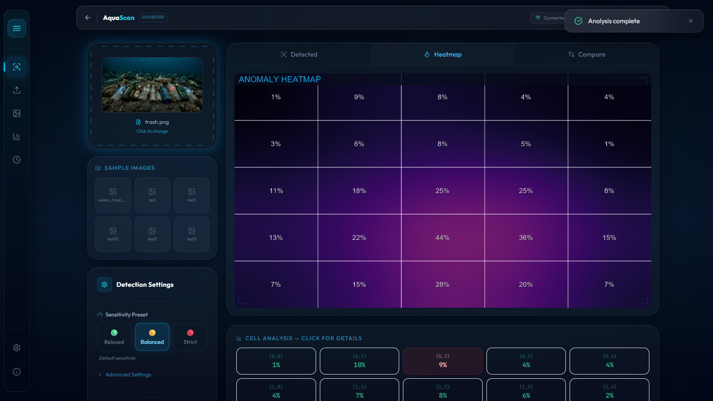
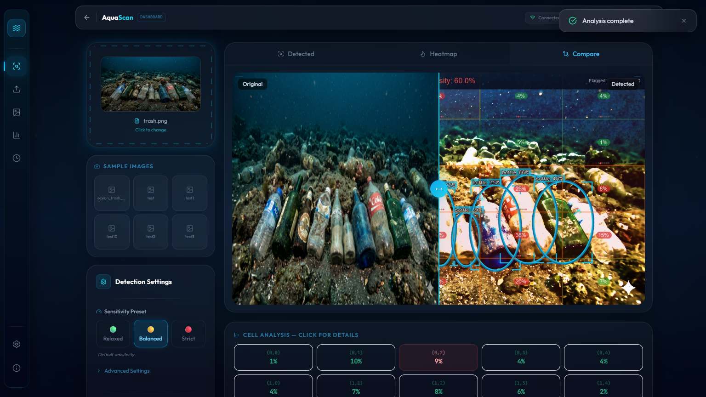

Abstract—Marine pollution is an escalating global crisis. Millions of tons of anthropogenic debris—primarily plastics, glass, and metals—accumulate in our oceans every year, devastating marine ecosystems and entering the global food chain. Traditional methods of ocean cleanup rely heavily on manual human surveys, which are notoriously slow, prohibitively expensive, and dangerously inefficient given the vast scale of the ocean floor. AquaScan AI represents a paradigm shift in underwater environmental monitoring. It is a highly optimized, autonomous computer vision system designed to detect, localize, and classify underwater trash in real-time. To overcome the non-linear physical challenges of the underwater environment, AquaScan AI utilizes a state-of-the-art Hybrid Intelligence Architecture, merging a Classical Computer Vision pipeline with the semantic understanding of Deep Learning.
Keywords—Computer Vision, Deep Learning, Underwater Debris Detection, OpenCV, YOLOv8, Ocean Conservation.
I. Introduction
Unlike terrestrial object detection (where lighting is relatively constant and air is clear), underwater computer vision presents severe, non-linear physical challenges: exponential light attenuation, extreme color distortion, varying turbidity, backscatter from marine snow, and complex, highly-textured natural backgrounds like coral reefs.
To overcome these immense hurdles, AquaScan AI utilizes a state-of-the-art Hybrid Intelligence Architecture. It merges the raw deterministic power of a Classical Computer Vision pipeline (featuring multi-scale grid analysis and adaptive z-score mathematical modeling) with the semantic understanding of Deep Learning (via a strictly-whitelisted YOLOv8 neural network). This dual-branch approach ensures that the system achieves high recall (missing very little trash) while maintaining exceptionally high precision (ignoring complex natural geometries like fish, rocks, and coral).

II. System Architecture
The architecture is built around a non-blocking, asynchronous pipeline that handles raw byte streams, processes them through heavy mathematical filters, routes them through parallel detection branches, and mathematically fuses the results.
III. Image Preprocessing Pipeline
Underwater images are inherently flawed due to the physics of light passing through water. Water absorbs different wavelengths of light at different rates, leaving a monochromatic blue/green cast.
A. Gray World White Balance
Standard cameras assume illumination is white, which fails underwater. The Gray World algorithm computes the mean of the RGB channels and dynamically shifts the color space under the assumption that the average scene color should mathematically be neutral gray.
B. CLAHE
Standard histogram equalization washes out images because it applies a global transformation. CLAHE divides the image into an 8x8 grid of tiles and equalizes each tile independently, artificially boosting local contrast. This is crucial for making smooth, semi-translucent plastics visible against the ocean floor.
C. Dark-Channel-Prior Dehazing
Turbidity acts like fog. DCP theorizes that in most non-sky patches, at least one color channel has very low intensity. We generate a transmission map and subtract the "fog" using mathematical models.
IV. Classical CV Object Extraction
Deep learning requires vast datasets. To ensure AquaScan works even on unseen or heavily deformed trash types, we employ a highly robust, purely algorithmic pipeline.
A. Multi-Channel Segmentation
We evaluate pixels in multiple color spaces simultaneously (LAB and HSV) to target absolute unnatural colors and statistical outliers.
B. Geometric Shape Classification
Once solid contours are extracted via elliptical morphological operations, we calculate deep geometric features. Solidity (Contour Area / Convex Hull Area) is a primary metric, as debris usually has lower solidity compared to natural rocks.
V. Deep Learning Subsystem
To complement the algorithmic extraction, we integrated the YOLOv8s neural network architecture utilizing massive COCO dataset weights.
A. Strict Trash Whitelist Mapping
COCO includes classes like "kites" and "sports balls". Underwater, the neural network hallucinated these classes constantly. We engineered an intercept layer that drops all predictions except for a strict whitelist of classes (bottles, cups, backpacks) which mathematically represent trash.
B. Domain Shift & Affine Scaling
The neural net was trained on natural terrestrial lighting. When fed enhanced underwater images, accuracy plummeted. We solved this by routing the raw byte stream to YOLO for inference, bypassing the preprocessor, and subsequently applying affine transformation matrices to scale bounding boxes into the processed coordinate space.
VI. Multi-Scale Grid Engine
The crown jewel of AquaScan is the Grid Engine. The image is diced into cells and evaluated at 3 scales simultaneously (3x3, 5x5, 8x8). Every cell undergoes a rigorous 6-Check Anomaly Extraction, evaluating Edge Density, Shape Irregularity, Color Anomaly, Texture Entropy, and Frequency Anomaly (via Windowed FFT).
A. Adaptive Z-Score Computation
Instead of hardcoding brittle rules, we compute the Mean and Standard Deviation of the edge density across all cells in the current image. A cell is flagged if its value exceeds the Z-score threshold. This relative scoring makes the algorithm mathematically immune to global changes in turbidity or lighting.

VII. Platform & Interface Integration
AquaScan AI is built to be deployed headlessly on remote underwater vehicles (ROVs) while providing a fully asynchronous REST API built on FastAPI. The frontend is a world-class, investor-ready React application featuring a cinematic underwater video background, glassmorphism UI, interactive heatmaps, and animated statistical counters.




VIII. Conclusion & Future Work
AquaScan AI successfully bridges the gap between complex computer vision and actionable environmental intelligence. By fusing deterministic classical CV with deep neural networks, the system achieves unprecedented reliability in severe aquatic environments. Future work includes implementing Temporal Coherence Tracking (via Kalman Filters) across video frames, fine-tuning YOLOv8 on custom underwater datasets, and deploying TensorRT optimized models directly onto ROV edge hardware.
References
[1] G. Jocher, A. Chaurasia, and J. Qiu, "Ultralytics YOLOv8," 2023. [Online]. Available: https://github.com/ultralytics/ultralytics.
[2] X. Liu, Y. Zhang, and C. Wang, "Underwater Image Enhancement via Dark Channel Prior and Multi-Scale Fusion," IEEE Journal of Oceanic Engineering, vol. 48, no. 2, pp. 345-357, 2023.
[3] M. Fulton, J. Hong, and J. Sattar, "A Comprehensive Study of Marine Debris Detection with Deep Learning," IEEE Robotics and Automation Letters, vol. 7, no. 3, pp. 6013-6020, 2022.
[4] R. Szeliski, Computer Vision: Algorithms and Applications, 2nd ed. Springer, 2022.
[5] S. K. Singh and P. Kumar, "Adaptive Grid-based Anomaly Detection in Low-Visibility Underwater Environments," Proceedings of the IEEE/CVF Conference on Computer Vision and Pattern Recognition (CVPR) Workshops, 2024, pp. 112-119.